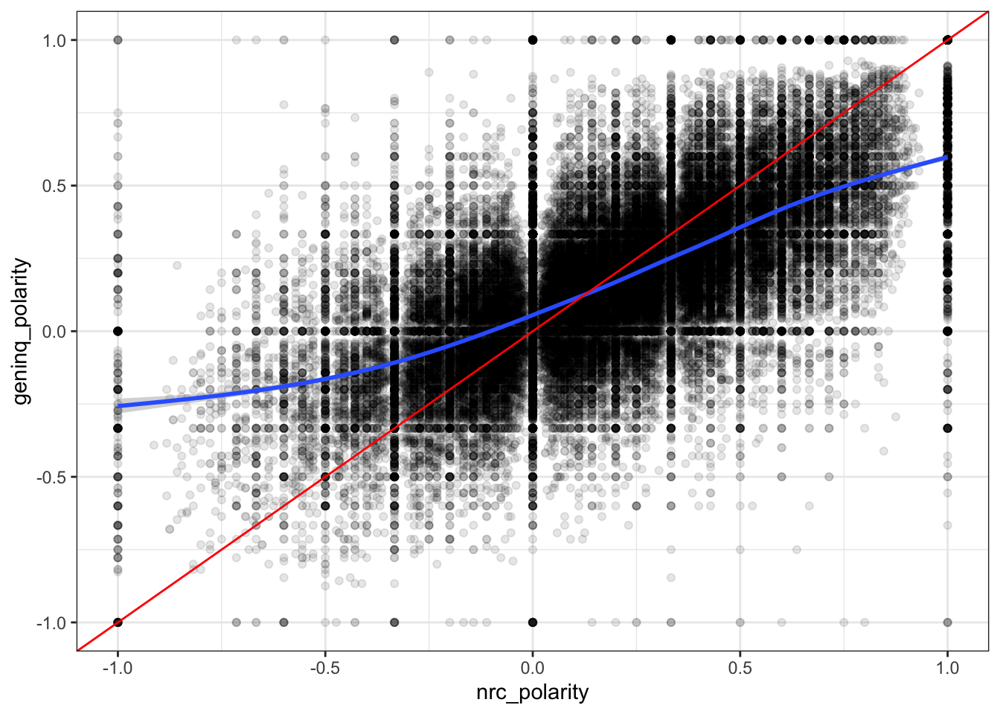
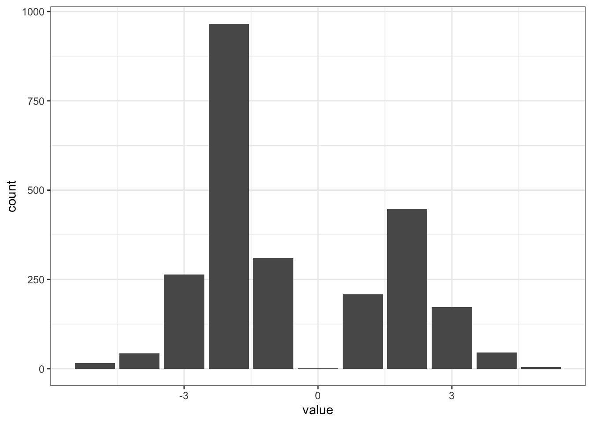
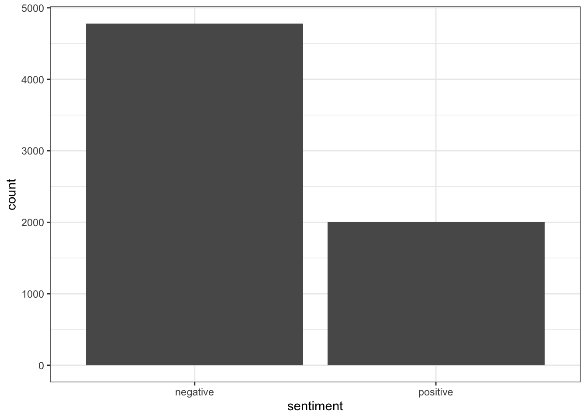

Package version: 4.1.0
Unicode version: 14.0
ICU version: 71.1
Parallel computing: disabled
See https://quanteda.io for tutorials and examples.
library(quanteda.textmodels)library(ggplot2)
This time, we’ll be making use of a package that’s available on GitHub. To install it, we need to load the devtools package. The package itself contains a host of different dictionaries publicly available dictionaries.
The following object is masked from 'package:quanteda':
data_dictionary_LSD2015
# large movie review database of 50,000 movie reviewsload(url("https://www.dropbox.com/s/sjdfmx8ggwfda5o/data_orpus_LMRD.rda?dl=1"))# this process is unnecessary, given 'data_corpus_LMRD' is a corpus object; but to make suredata_corpus_LMRD <-corpus(data_corpus_LMRD)# check the text of document 1convert(data_corpus_LMRD[1],to="data.frame")
doc_id
1 test/neg/0_2.txt
text
1 Once again Mr. Costner has dragged out a movie for far longer than necessary. Aside from the terrific sea rescue sequences, of which there are very few I just did not care about any of the characters. Most of us have ghosts in the closet, and Costner's character are realized early on, and then forgotten until much later, by which time I did not care. The character we should really care about is a very cocky, overconfident Ashton Kutcher. The problem is he comes off as kid who thinks he's better than anyone else around him and shows no signs of a cluttered closet. His only obstacle appears to be winning over Costner. Finally when we are well past the half way point of this stinker, Costner tells us all about Kutcher's ghosts. We are told why Kutcher is driven to be the best with no prior inkling or foreshadowing. No magic here, it was all I could do to keep from turning it off an hour in.
docnumber rating set polarity
1 0 2 test neg
Dictionary Analysis
The basic idea with a dictionary analysis is to identify a set of words that connect to a certain concept, and to count the frequency of that set of words within a document. The set of words is the dictionary; as you might quickly realize, a more appropriate name is probably thesaurus.
liwcalike()
There are a couple of ways to do this. First, the quanteda.dictionaries package contains the liwcalike() function, which takes a corpus or character vector and carries out an analysis–based on a provide dictionary–that mimics the pay-to-play software LIWC (Linguistic Inquiry and Word Count). The LIWC software calculates the percentage of the document that reflects a host of different characteristics. We are going to focus on positive and negative language, but keep in mind that there are lots of other dimensions that could be of interest.
# use liwcalike() to estimate sentiment using NRC dictionaryreviewSentiment_nrc <-liwcalike(data_corpus_LMRD, data_dictionary_NRC)names(reviewSentiment_nrc)
Corpus consisting of 26 documents and 4 docvars.
test/neg/11213_3.txt :
"I couldn't stop laughing, I caught this again on late night ..."
test/neg/5147_1.txt :
"Primary plot!Primary direction!Poor interpretation."
test/pos/10115_8.txt :
"Radio will have you laughing, crying, feeling. This story ba..."
test/pos/1049_9.txt :
"Add this little gem to your list of holiday regulars. It is ..."
test/pos/11123_8.txt :
"We enjoy a film like "Fame" because we imagine we are there ..."
test/pos/1592_10.txt :
"Morte a Venezia is one of my favorite movies. More than beau..."
[ reached max_ndoc ... 20 more documents ]
Corpus consisting of 14 documents and 4 docvars.
test/neg/3718_1.txt :
"This was truly horrible. Bad acting, bad writing, bad effect..."
test/neg/3847_1.txt :
"John Leguizamo must have been insane if he thinks this was a..."
test/neg/819_1.txt :
"it really is terrible, from start to finish you'll sit and w..."
train/neg/11201_1.txt :
"Horrible waste of time - bad acting, plot, directing. This i..."
train/neg/11699_1.txt :
"The plot of The Thinner is decidedly thin. And gross. An obe..."
train/neg/11931_2.txt :
"Olivier Gruner stars as Jacques a foreign exchange college s..."
[ reached max_ndoc ... 8 more documents ]
Of course, you might be realizing that the proportions of positive and negative words used in isolation might be a poor indicator of overall sentiment. Instead, we want a score that incorporates both. The example directly above alludes to this problem, as the description of a horror movie makes it look negative, but in reality there are also a lot of positive words in there. So let’s correct for that and see what we’ve got.
Corpus consisting of 18 documents and 4 docvars.
test/neg/1792_3.txt :
"Aside from the horrendous acting and the ridiculous and ludi..."
test/neg/3718_1.txt :
"This was truly horrible. Bad acting, bad writing, bad effect..."
test/neg/3850_1.txt :
"This movie is pathetic in every way possible. Bad acting, ho..."
test/neg/6263_2.txt :
"Cheerleader Massacre was supposed to be the fourth installme..."
test/neg/6850_2.txt :
"Read the book, forget the movie!"
test/neg/7458_1.txt :
"Everything about this movie is bad. everything. Ridiculous 8..."
[ reached max_ndoc ... 12 more documents ]
Ah. unfortunately the same problem persists. We’ll come back to this later.
Using Dictionaries with DFMs
# create a full dfm for comparisonmovieReviewDfm <-tokens(data_corpus_LMRD,remove_punct =TRUE,remove_symbols =TRUE,remove_numbers =TRUE,remove_url =TRUE,split_hyphens =FALSE,include_docvars =TRUE) %>%tokens_tolower() %>%dfm()head(movieReviewDfm, 10)
Document-feature matrix of: 10 documents, 145,748 features (99.91% sparse) and 4 docvars.
features
docs once again mr costner has dragged out a movie for
test/neg/0_2.txt 1 1 1 3 1 1 1 3 1 1
test/neg/10000_4.txt 0 0 0 0 2 0 0 4 0 3
test/neg/10001_1.txt 0 0 0 0 0 0 0 6 3 2
test/neg/10002_3.txt 0 0 0 0 0 0 1 8 5 2
test/neg/10003_3.txt 0 0 0 0 0 0 0 4 0 4
test/neg/10004_2.txt 0 0 0 0 1 0 0 3 0 0
[ reached max_ndoc ... 4 more documents, reached max_nfeat ... 145,738 more features ]
dim(movieReviewDfm)
[1] 50000 145748
# convert corpus to dfm using the dictionarymovieReviewDfm_nrc <-tokens(data_corpus_LMRD,remove_punct =TRUE,remove_symbols =TRUE,remove_numbers =TRUE,remove_url =TRUE,split_hyphens =FALSE,include_docvars =TRUE) %>%tokens_tolower() %>%dfm() %>%dfm_lookup(data_dictionary_NRC)dim(movieReviewDfm_nrc)
Note that these are counts now, rather than the percentage that we got from liwcalike(). Let’s convert that to a data frame that’s useful for downstream analysis, then create a polarity measure.
df_nrc <-convert(movieReviewDfm_nrc, to ="data.frame")names(df_nrc)
New York family is the last in their neighborhood to get a television set, which nearly ruins David Niven's marriage to Mitzi Gaynor. Bedroom comedy that rarely ventures into the bedroom(and nothing sexy happens there anyway). Gaynor as an actress has about as much range as an oven--she turns on, she turns off. Film's sole compensation is a supporting performance by perky Patty Duke, pre-"Miracle Worker", as Niven's daughter. She's delightful; "Happy Anniversary" is not. * from ****
Aya! If you are looking for special effects that are 10-20 years before its time, this is it. The glowing lightning bolts, fireballs, etc. look like they came from a cheesy 70's sci-fi flick. And yes, Hercules really grows; he's not being pushed on a cart closer to the camera!
First of all, I really can't understand how some people "enjoyed" this movie. It's the worst thing I have ever seen. Even the actors seem to be bored...and I think that says it all!
However, I have to give my applause to the opening credits creators - that team seems to have a really good future. That's why I recommend the big studios to watch ONLY the opening credits, and one or two special effects sequences (if they're watched outside this movie, it almost looks like a good movie).
Better luck (or judgment) next time for the producers of this, this... this "thing!".
The movie is a happy lullaby, was made to make us sleep. And that´s what we do, as we dream about the top beautiful Natasha Henstridge. No screenplay, no deep characters, nothing special. So, let´s sleep.
The first season was great - good mix of the job and the brother and friends at home. it was actually a pretty funny show.
Now it shows up again and the brother and the two hot chicks are gone -- and the whole thing revolves around the airline company. Even the old man who runs the company has gone downhill - way too over the top, where before it was perfect.
That and no more Sarah Mason - one of the best looking girls in Hollywood.
This is what happens when you let some execs get their hands on a show. You can almost see the meeting "the old man is funny, lets focus on him, make him way over the top and make it all about the airline.. it'll be a nutty version of the office!" Anyhow, no hot chicks, no watch.
I laughed at the movie! The script, the acting please don't we deserve better? But now the filming, some of the camera angles were interesting. I did enjoy the film, but it's not to be taken seriously though. I liked it. If it had a new cast and scriptwritter it would be better than all right. It's worth a look!
Well, that’s not good. Those are all pretty negative reviews but they are ranked as positive by our sentiment score. Let’s add some other dictionaries and compare.
Dictionary Comparison
# convert corpus to DFM using the General Inquirer dictionarymovieReviewDfm_geninq <- movieReviewDfm %>%dfm_lookup(data_dictionary_geninqposneg)head(movieReviewDfm_geninq, 6)
The quanteda.dictionaries package provides access to a host of different dictionaries, with a real diversity of dimensions supposedly captured through the dictionaries. For now, we’ll focus just on two of the packages that include positive and negative.
# create polarity measure for geninqdf_geninq <-convert(movieReviewDfm_geninq, to ="data.frame")df_geninq$polarity <- (df_geninq$positive - df_geninq$negative)/(df_geninq$positive + df_geninq$negative)df_geninq$polarity[which((df_geninq$positive + df_geninq$negative) ==0)] <-0# look at first few rowshead(df_geninq)
Now that we have them all in a single dataframe, it’s straightforward to figure out a bit about how well our different measures of polarity agree across the different approaches.
# Plot this out. You can update this to check the look of other combinations.ggplot(sent_df, mapping =aes(x = nrc_polarity,y = geninq_polarity)) +geom_point(alpha =0.1) +geom_smooth() +geom_abline(intercept =0, slope =1, color ="red") +theme_bw()
`geom_smooth()` using method = 'gam' and formula = 'y ~ s(x, bs = "cs")'

As the plots make clear, while the measures are strongly correlated, they are decidedly not identical to one another. We can observe really significant variance across each in the estimates of polarity. So which is the best? Well, we could depend on our actual classifications to try to understand that. Of course, for many of the settings where we’d really like to know sentiment (from tweets, or news articles, or speeches, and so on), we won’t know the true sentiment. In those cases, we could hand-code a random subset. If we’re doing that, though, why not just code some more and use it as a training set for a supervised learning approach?
In all, for many of our research settings, we are limited in what we can learn from these sorts of dictionary approaches unless we do substantial validation of the estimates.
Apply Dictionary within Contexts
The approach we’ve taken so far largely leverages working with DFMs. However, we might care about contextual usage. So, for instance, how is New York City treated across the corpus of movie reviews when it is discussed? To see this, we’ll first limit our corpus to just New York City related tokens (ny_words) and the window they appear within.
# tokenize corpustokens_LMRD <-tokens(data_corpus_LMRD, remove_punct =TRUE)# what are the context (target) words or phrasesny_words <-c("big apple", "new york", "nyc", "ny", "new york city", "brookyln", "bronx", "manhattan", "queens", "staten island")# retain only our tokens and their contexttokens_ny <-tokens_keep(tokens_LMRD, pattern =phrase(ny_words), window =40)
Next, we’ll pull out the positive and negative dictionaries and look for those within our token sets.
Ok. As you can see above we have some positive and negative words in one of our movie reviews, but many more did not feature any emotionally valence words. We’ll drop those from our analysis, then take a look at the distribution.
# convert to data framemat_ny <-convert(dfm_ny, to ="data.frame")# drop if both features are 0mat_ny <- mat_ny[-which((mat_ny$negative + mat_ny$positive)==0),]# print a little summary infopaste("We have ",nrow(mat_ny)," reviews that mention positive or negative words in the context of New York City terms.", sep="")
[1] "We have 1442 reviews that mention positive or negative words in the context of New York City terms."
In addition to count frequency, we can also assign values/weights to words, to indicate how strongly positive/negative each word is.
For example, we first construct a fake corpus
df <-c('I am happy and kind of sad','sad is sad, happy is good')df_corpus <-corpus(df)df_dfm <-tokens(df_corpus,remove_punct =TRUE, remove_symbols =TRUE) %>%tokens_tolower() %>%dfm()head(df_dfm)
Document-feature matrix of: 2 documents, 9 features (38.89% sparse) and 0 docvars.
features
docs i am happy and kind of sad is good
text1 1 1 1 1 1 1 1 0 0
text2 0 0 1 0 0 0 2 2 1
#convert dfm to dataframe for further stepsdf2 <-convert(df_dfm, to ="data.frame")df3 <-pivot_longer(df2,!doc_id,names_to="word")
Now construct your lexicon dictionary with values/weights
ggplot(afinn_dict) +geom_histogram(aes(x=value), stat ="count") +theme_bw()
Warning in geom_histogram(aes(x = value), stat = "count"): Ignoring unknown
parameters: `binwidth`, `bins`, and `pad`

loughran
Loughran-McDonald sentiment lexicon is for use with financial documents. It labels words with six sentiments important in financial contexts: constraining, litigious, negative, positive, superfluous, and uncertainty. A word may belong to multiple sentiments.
ggplot(bing_dict) +geom_histogram(aes(x=sentiment), stat ="count") +theme_bw()
Warning in geom_histogram(aes(x = sentiment), stat = "count"): Ignoring unknown
parameters: `binwidth`, `bins`, and `pad`

nrc
Categorize words into eight emotions: anger, fear, anticipation, trust, surprise, sadness, joy, and disgust; and two sentiments: negative and positive. One word can belong to multiple categories.